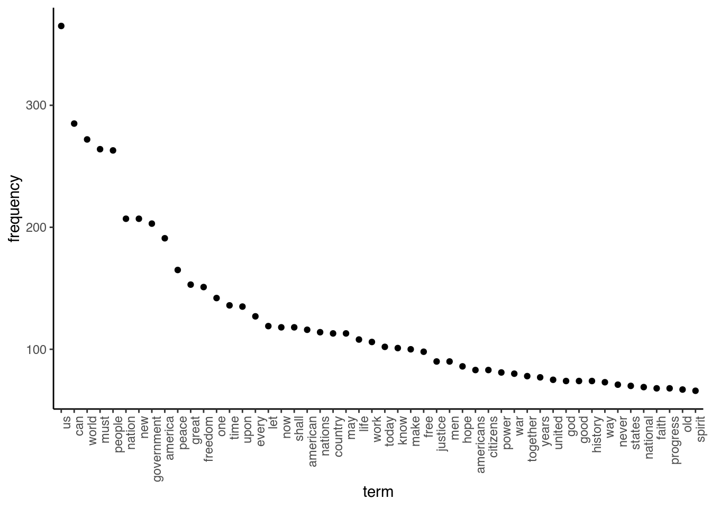
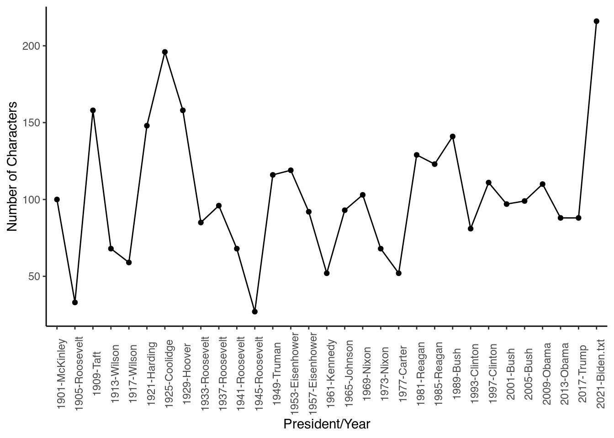
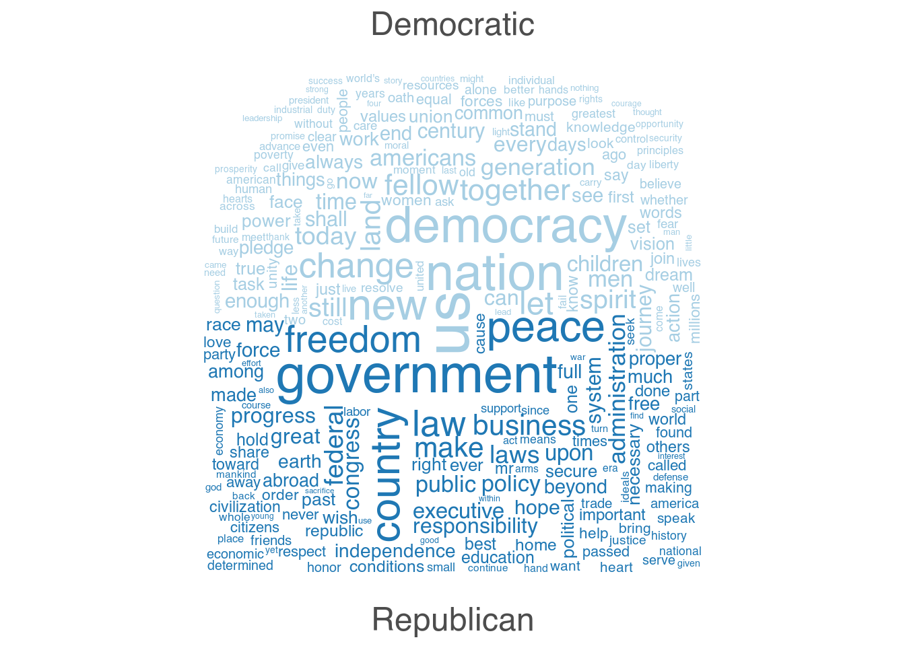

Another thing we can do is generate various visualisations to understand our data. One interesting thing can be to see which words occur most often. We can do this using the topfeatures function. For this, we first have to save the 50 most frequently occurring words in our texts (note that there is also the textstat_frequency function in the quanteda.textstats helper package that can do this):
features <- topfeatures(data_inaugural_dfm, 50)We then have to transform this object into a data frame, and sort it by decreasing frequency:
features_plot <- data.frame(list(term = names(features),frequency = unname(features)))
features_plot$term <- with(features_plot, reorder(term, -frequency))Then we can plot the results:
library(ggplot2)
ggplot(features_plot) +
geom_point(aes(x=term, y=frequency)) +
theme_classic()+
theme(axis.text.x=element_text(angle=90, hjust=1))
We can also generate word clouds. As these show all the words we have, we will trim our dfm first to remove all those words that occurred less than 40 times. We can do this with the dfm_trim function. Then, we can use this trimmed dfm to generate the word cloud:
library(quanteda.textplots)
wordcloud_dfm_trim <- dfm_trim(data_inaugural_dfm, min_termfreq = 40)
textplot_wordcloud(wordcloud_dfm_trim)
If we would want to, we can also split up this word cloud based on which words belong to which party. For this, we have to generate a new dfm and within it, specify the groups that well which words belong to which party. Given that we have only Democratic and Republican presidents, we end up with two groups:
library(quanteda.textplots)
wordcloud_dfm_comp <- dfm_group(data_inaugural_dfm, groups = Party)
wordcloud_dfm_comp <- dfm_trim(wordcloud_dfm_comp, min_termfreq = 20,
max_words = 40)
textplot_wordcloud(wordcloud_dfm_comp, comparison = TRUE)